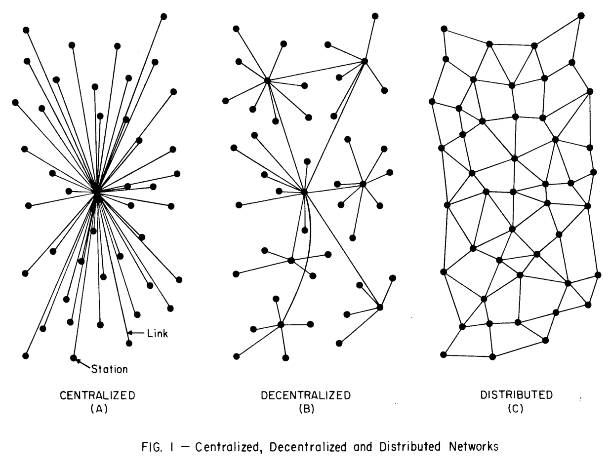

Welcome to Unit 4:
Personal Computing and the Internet
CSCI1800
Dr. Aaron Sidney Wright
asw@dal.ca

Agenda
- Overview of Unit 4
- Essay Topic 1: Indigenous Networks
- Essay Topic 2: The Internet in historical perspective
- Essay Topic 3: Radio and personal computers
Use these slides on your own: https://g.aaronswright.com/.
Tools for Getting Organized in Unit 4
The Course Syllabus, the Unit 4 Checklist

Unit 4 Graded Activities
Recall: the Writing Process
Invention
Organization
Composition
Revision
- 5pm Tues. 24.11.20: Team Plan Unit 4
- 5pm Wed. 2.12.20: Outline Short Exercise
- 5pm Mon. 7.12.20: Essay Draft
- 5pm Wed. 9.12.20: Peer-review Comments
- 5pm Fri. 11.12.20: Unit 4 Final Essay
Unit 4 Tools
Mon. 30 Nov: "Help" lecture. You decide the topics! Tell Dr. Wright what you want to learn in Office Hours or the Ask a Question forum
Outline Short Exercise. Make an outline for your essay.
Instructions in Assignments > "Outline Unit 4".
Pass/Fail, worth 2%.
No Thesis Development Sheet in Unit 4
Unit 4 Readings

- Campbell-Kelly et al. (2014) ch. 10 The Shaping of the Personal Computer and ch. 12 The Internet
- Beaton et al. (2015) "Keewaytinook Mobile" in BSpace > Content > Readings
Unit 4: Events, People, Inventions
- Time period: 1940s to Present
- New machines: Personal computers; Inter-networks; Mobile phones
- Innovations: Computers for consumers, Personal software, Distributed communications, web 2.0, Indigenous ownership
Origins of the Internet
Drawing of Vannevar Bush's imagined "memex" machine, a universal library. From “As We May Think” Life Magazine 1945.
Agenda
- Overview of Unit 4
- Essay Topic 1: Indigenous Networks
- Essay Topic 2: The Internet in historical perspective
- Essay Topic 3: Radio and personal computers
Use these slides on your own: https://g.aaronswright.com/.
Essay Topic 1: Indigenous Networks
Unit 4 CSCI1800
Dr. Aaron Sidney Wright
asw@dal.ca
Recall: Dal Official Land Acknowledgement
"Dalhousie University is located in Mi’kma’ki, the ancestral and unceded territory of the Mi’kmaq. We are all treaty people."

Computing has a role!

Essay Topics
Each essay topic has three parts:
- Historical background
- Core essay instruction
- Required sources
Background: Rural Internet
Historical Background
"Keewaytinook Okimakanak, which means Northern Chiefs in Oji-Cree, is a non-political Chiefs Council serving Deer Lake, Fort Severn, Keewaywin, McDowell Lake, North Spirit Lake and Poplar Hill First Nations." (Website)
Similar example
Heiltsuk Tribal Council, Bella Bella, BCEssay Topic 1: Core Instuction
Beaton et al. (2015) describes three important parts of the KNet story: 1) The business model; 2) The impact of mobile technology on local institutions and services; and 3) The impact of mobile technology on individual users.
In an essay of between 625 and 825 words, assess (judge) which of these three parts are the most important. Your essay should discuss all three parts of the story and explain why one is the most important. Your essay should define what you mean by "most important."
Essay Topic 1: Required Sources
Your essay must use the Beaton et al. (2015) article. Optionally, you may choose to use evidence about Indigenous networking from Indigenous Networking for Heiltsuk Nation (7min) or the Stories from the First Mile (FMCC2018).
Essay Topic 1: Indigenous Networks
Each essay topic has three parts:
- Historical background
- Core essay instruction
- Required sources
Agenda
- Overview of Unit 4
- Essay Topic 1: Indigenous Networks
- Essay Topic 2: The Internet in historical perspective
- Essay Topic 3: Radio and personal computers
Use these slides on your own: https://g.aaronswright.com/.
Essay Topic 2: The Internet in historical perspective
Unit 4 CSCI1800
Dr. Aaron Sidney Wright
asw@dal.ca
Essay Topics
Each essay topic has three parts:
- Historical background
- Core essay instruction
- Required sources
Historical Background
Philosopher's dreams
Military demands
Werner Herzog (dir) Lo and Behold, watch here: https://dal.kanopy.com/video/lo-and-behold-reveries-connected-world-2
Essay Topic 2: Core Instuction
In an essay of between 625 and 825 words, argue for one of the following claims:
- the history of the internet was basically the same as an earlier episode from the history of computing; or
- the history of the internet was basically the opposite of an earlier episode from the history of computing.
You must choose an episode from the history of computing from the Unit 1, Unit 2, or Unit 3 essay topics. If you choose an essay topic with a connection to contemporary (twentey-first century) computing, you must use the historical material and sources only.
Essay Topic 2: Required Sources
Your essay must use the history of the internet from chapter 12, Campbell-Kelly et al. and the course material for the historical episode you choose. Do not use any contemporary articles you found yourself. Optionally, you may use material from the Documentary "Lo and Behond" Werner Herzog dir., 90min.
Essay Topic 2: Internet in historical perspective

Each essay topic has three parts:
- Historical background
- Core essay instruction
- Required sources
Agenda
- Overview of Unit 4
- Essay Topic 1: Indigenous Networks
- Essay Topic 2: The Internet in historical perspective
- Essay Topic 3: Radio and personal computers
Use these slides on your own: https://g.aaronswright.com/.
Essay Topic 3: Radio and Personal Computers
Unit 4 CSCI1800
Dr. Aaron Sidney Wright
asw@dal.ca
Essay Topics
Each essay topic has three parts:
- Historical background
- Core essay instruction
- Required sources
Historical Background

Historical Background
Campbell-Kelly et al: Lessons from Radio History- Unknown future importance of technological development
- Amateurs mattered
- After initial growth, industry became dominated by basically-identical giant companies
Essay Topic 3: Core Instuction
Campbell-Kelly et al: Lessons from Radio History- Unknown future importance of technological development
- Amateurs mattered
- After initial growth, industry became dominated by basically-identical giant companies
In an essay of between 625 and 825 words, assess (judge) the degree to which one of these key points about radio improves our understanding of the development of the personal computer.
Your essay should define what you mean by "improves our understanding."
Essay Topic 3: Required Sources
Your essay must use material from all sections of Campbell-Kelly et al.'s Chapter 10 (except the two introductory paragraphs).
A use of material means: a fact or idea from part of a section; a quote taken from a section; a paraphrase of part of a section; or a summary of (part of) a section. As always, all of these uses must be accompanied by an in-text citation.
Optionally, if you would like more information about the history of radio, you may use material from a Documentary on History of Radio.
Essay Topic 3: Radio and Personal Computers
Play the first computer game: Spacewar! www.masswerk.at/spacewar/
Each essay topic has three parts:
- Historical background
- Core essay instruction
- Required sources
Thank you for watching!
Dr. Aaron Sidney Wright
CSCI1800 Fall 2020
Use these slides on your own: https://g.aaronswright.com/.